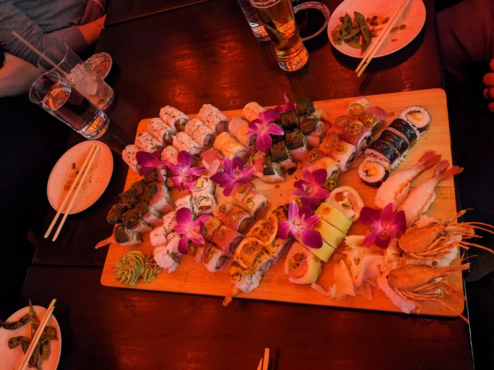
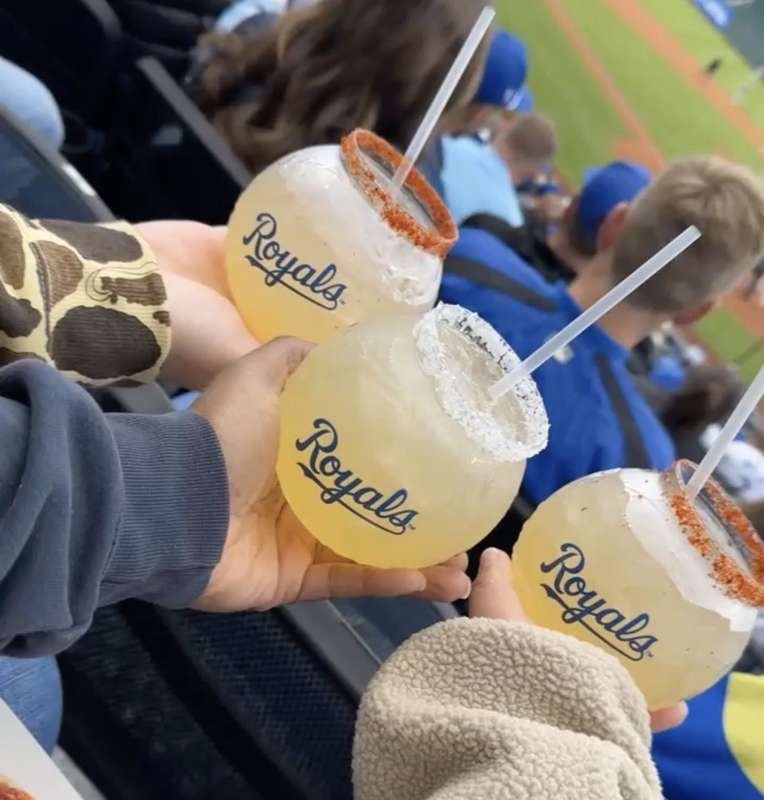
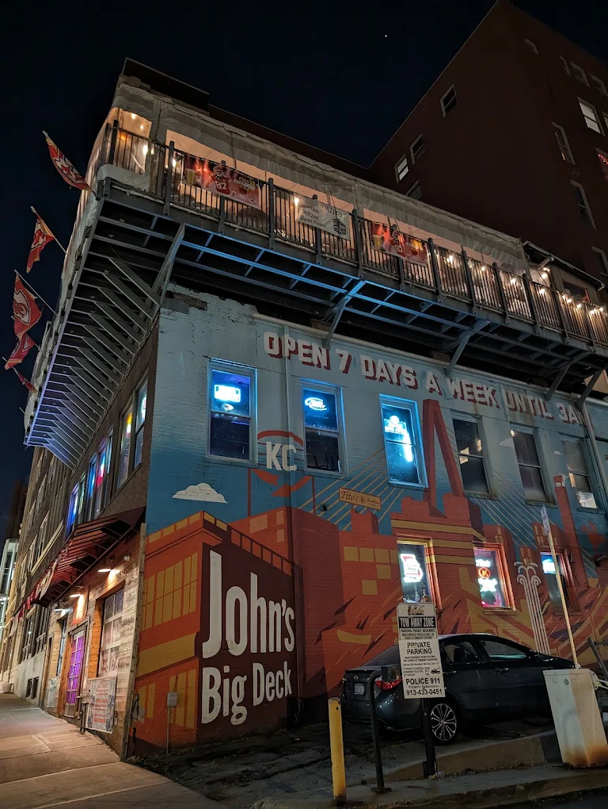

Why Kansas
Kansas, the state of sunflowers
Despite their cultural significance, wild sunflowers were ironically branded a "noxious weed" by state law in 1895. However, the resilient plant’s tough endurance on the prairie resonated with locals. Inspired by Kansans wearing the flower to identify their state, Senator George Morehouse introduced legislation to designate the wild native sunflower as the state flower. Governor Willis Bailey signed the bill on March 30, 1903.
Today, while the wild sunflower still dots roadsides and fields throughout all Kansas counties, farmers also cultivate commercial sunflower varieties to produce protein-rich seeds and healthy vegetable oils.
night out on the town
My favorite places in Kansas City

Blue Sushi Sake Grill
Conscious Earth is more than a promise - it’s our daily commitment to sourcing seafood responsibly, respecting ecosystems by land and sea, and supporting partners who share our values. Because sustainability isn’t a box to check - it’s how we roll.
Address:
101 E 14th St, Kansas City, MO 64106
What I like about it:
This is one of the best sushi grill's Kansas City has to offer. the atmosohere is great. The staff is respectable and hospitable. The dishes are always presented in a unique design to appeal to the aesthetic of the establishment. The drinks are served just right. I would definitely recommend eating here at least once if you are visiting and looking for fine dining that will not underdeliver!

Royals Stadium
Also know as, Kauffman Stadium- is a ballpark located in Kansas City, Missouri, and the home of Major League Baseball's Kansas City Royals. It is next door to Arrowhead Stadium, home of the National Football League's Kansas City Chiefs. Both make up the Truman Sports Complex.
Address:
1 Royal Way, Kansas City, MO 64129
What I like about it:
This stadium is known as the loudest stadium in all of the world. Sitting in the "Diamond Club" seating area calls for catering services straight to your seats and the best view of the game directly behind home plate.

John's Big Deck
Casual grill fare served in a hopping 3-level space with live music, DJs & a convivial rooftop bar.
Address:
928 Wyandotte St, Kansas City, MO 64105
What I like about it:
John's Big Deck, has a nice roof-top sitting area that allows the vibes to flow just right. There is a fire pit where you can enjoy your food and drinks with friends. Each of the 3 levels are split based on a variety of themes- dive bar, black-tie, and outdoor whimsical. Having these options catered based on the nights' events makes it all the more fun to intermingle with everyone around.